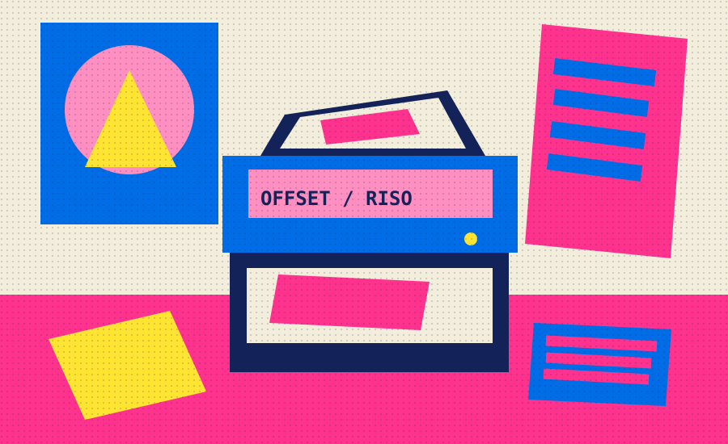

Send your files
PDF with each colour on its own layer. Not sure how? We'll help.
INDEPENDENT PRINT. GLASGOW, SCOTLAND.
Offset Club is a risograph and screen-print studio in Glasgow. We print zines, posters, art prints and merch for artists, bands and small brands, in runs from fifty to five thousand.

Mix any two, three or four. Tap a swatch to build a two-ink sample.
Your sample: choose your first ink.
PDF with each colour on its own layer. Not sure how? We'll help.
We post free paper and ink samples if you want to feel them first.
A photo of the first sheet off the drum before we run the lot.
Usually five working days from approval.
Our print wall — original illustrative studies for the projects in the brief.
GET YOUR HANDS INKY
Saturday 10 October · 10am – 4pm · £85
Design and print your own two-colour A3 poster. All materials included.
Sunday 25 October · 11am – 5pm · £70
Write, lay out, print and bind a 16-page zine to take home.
Illustrative programme from the brief. Enquiries open an email; places and dates are not live.
We're in a railway arch in the East End. Drop in to talk through a project, or to pick up paper samples.
Arch 14, 70 Bain StreetTue – Sat 10am – 6pm
hello@offsetclub.co.uk ↗